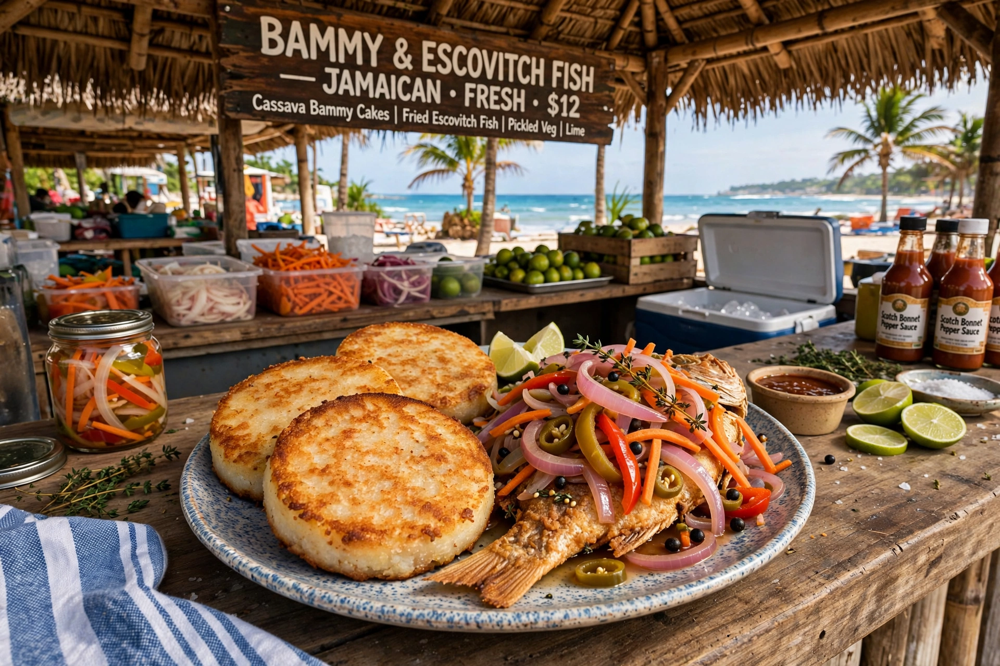

Bammy

| Bammy | |
|---|---|
| Type | Flatbread |
| Place of origin | Jamaica |
| Main ingredients | Grated bitter cassava (yuca), salt |
| Variations | Steamed, fried, baked; sometimes in coconut milk |
Bammy is a traditional Jamaican flatbread made from bitter cassava (yuca). It descends from the cassava bread of the island's Indigenous Taíno (Arawak) people, who cultivated bitter cassava and processed it to remove its cyanogenic compounds; the technique was adopted and preserved by Afro-Jamaican communities, and bammy remains a staple of Jamaican cuisine.
Preparation
Bitter cassava tubers are peeled, grated, and the pulp squeezed — traditionally in a woven basket press or cloth — to extract the poisonous juice. The pressed meal is sieved, salted, and formed into round cakes about 10 cm (4 in) across, which are baked or dry-fried on a griddle or flat iron, traditionally over an open fire. Before serving, the firm discs are often soaked in coconut milk or water and then steamed, baked or fried until soft and slightly golden.
Serving
Bammy is the classic accompaniment to escovitch fish — fried fish topped with a spicy pickled vegetable sauce — a pairing sold by beachside vendors such as those at Hellshire Beach near Kingston, and traditionally eaten at Easter and on Good Friday. It is also served with ackee and saltfish, fried fish, and other Jamaican dishes, in place of bread or rice. Once in decline in the mid-20th century as wheat bread displaced it, bammy has enjoyed a revival as a heritage food and is now produced commercially in Jamaica and sold to the Caribbean diaspora.